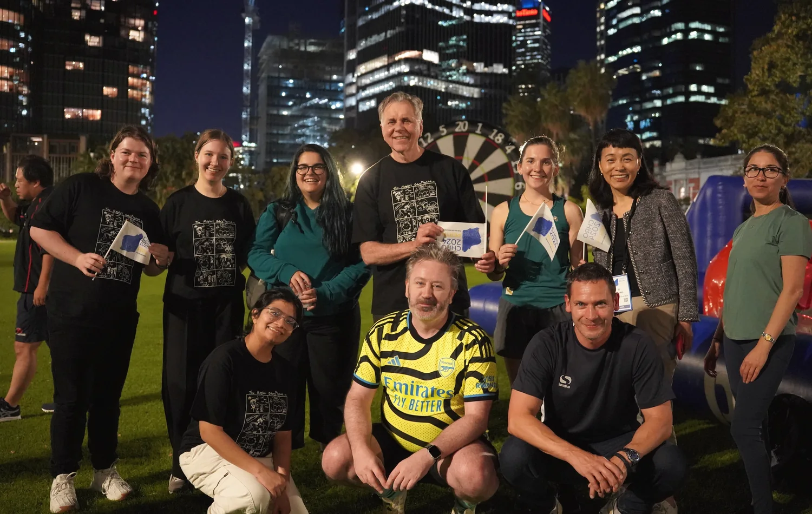
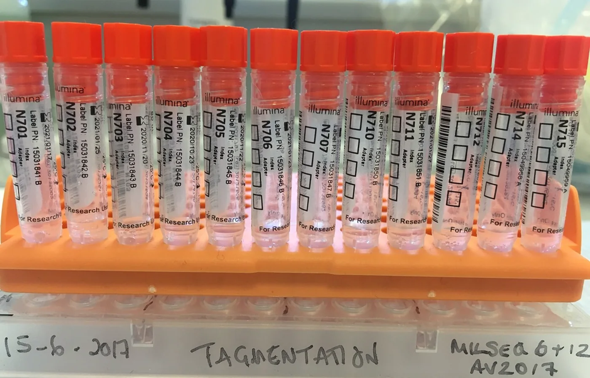

Transmission
Coordinated sampling across people, animals, food and environments to identify major exposure pathways.
Project 02-B
A One Health network moving from pathogen genomes to practical prevention in high-burden settings.
Mission
CCC builds on GETcampy and related collaborations to understand where Campylobacter transmission occurs, which bacterial populations are involved and where intervention could produce the greatest benefit.
The programme combines human, animal and environmental sampling with whole-genome and metagenomic analysis, source attribution, decision-support modelling and vaccine-informed prevention.

Focus areas
Coordinated sampling across people, animals, food and environments to identify major exposure pathways.
Linking reservoirs, lineages, resistance and disease while accounting for recombination and population structure.
Combining source attribution and modelling to compare practical prevention strategies, including upstream interventions.
Shared SOPs, workshops, early-career development and analytical resources designed for continued local use.
Stable nomenclature and linked epidemiological metadata to improve interpretation across studies and outbreaks.
Public protocols, project documentation, code and communication resources that make collaboration easier.
CCC in practice


Project photographs are served from the public CCC media collection. Identifiable community or participant images are not used here.
Key resources
Consortium profiles, protocols, governance, workshops, data resources and the PhD programme are maintained on the CCC website.